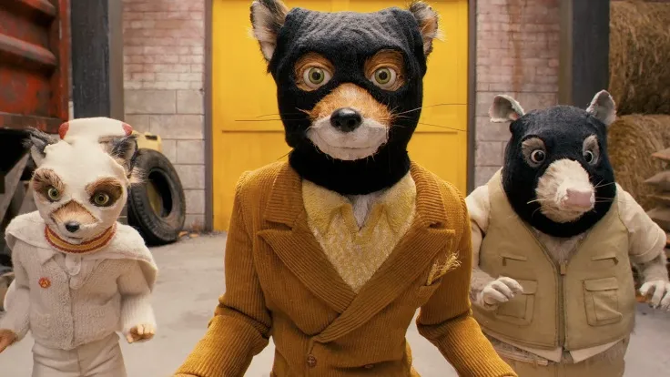

6 obras de animación para cuando no sepas qué ver
Leer más
El fantástico Mr. Fox (2009) no es solo una adaptación del cuento de Roald Dahl ni una película de animación para todos los públicos. Es, probablemente, la obra más íntima y autorreferencial de Wes Anderson, una fábula animada donde el director proyecta muchas de sus obsesiones creativas y personales: la familia, la identidad, el miedo a la irrelevancia y la dificultad de madurar sin traicionarse a uno mismo.
Anderson elige el stop-motion no solo por su valor estético, sino por su capacidad para transmitir cercanía y humanidad. Los personajes, construidos manualmente, poseen una fisicidad tangible: se perciben las texturas del pelaje, los movimientos levemente imperfectos y la materialidad de los escenarios. Esta imperfección deliberada refuerza el carácter artesanal de la historia y conecta con su mensaje central: aceptar nuestras contradicciones y límites forma parte del proceso de crecer.
Visualmente, la película es inconfundible. La simetría obsesiva, los colores otoñales y la composición milimétrica de cada plano reflejan el control creativo característico de Anderson. Cada escenario funciona como una maqueta viva, cuidadosamente diseñada, donde nada es casual. El impacto visual no persigue el realismo, sino la coherencia emocional: el mundo exterior refleja el conflicto interno de sus personajes, atrapados entre el instinto y la responsabilidad.
En esta película, la conexión entre autor y personaje es total. Mr. Fox puede leerse como un claro alter ego de Wes Anderson: viste trajes de pana diseñados por el propio sastre personal del director y comparte su misma neurosis creativa, la necesidad de que todo esté perfectamente planificado, coreografiado y estéticamente controlado. Mr. Fox encarna la metáfora de un artista que lucha por equilibrar su instinto salvaje —su visión creativa indomable— con sus responsabilidades familiares y sociales, un conflicto profundamente personal en la filmografía de Anderson.
En el corazón del relato late una crisis de identidad. “¿Cómo puede un zorro ser feliz sin un pollo en la boca?”, se pregunta el protagonista, formulando una duda que trasciende lo literal. A través de este conflicto, Anderson reflexiona sobre el miedo a volverse aburrido al crecer, a perder aquello que nos hacía únicos. Es una exploración íntima de la tensión entre quiénes somos por naturaleza y quiénes debemos ser para los demás: padres responsables, parejas estables, miembros funcionales de una comunidad.
Más allá del viaje individual de Mr. Fox, la película habla de comunidad. Los animales que viven bajo tierra, unidos frente a una amenaza común, representan la importancia del cuidado colectivo y la empatía. Anderson construye una fábula que, sin moralizar, sugiere que la verdadera astucia no reside en la transgresión constante, sino en aprender a convivir, ceder y responsabilizarse sin renunciar del todo a la propia identidad.
El fantástico Mr. Fox es una película sobre aceptar quién eres sin dejar de crecer. Utiliza la animación stop-motion para contar una historia profundamente humana, donde el humor convive con la melancolía y el estilo visual refuerza el significado emocional. Lejos de ser solo un ejercicio estético, la película se consolida como una obra madura, honesta y autoral, demostrando que la animación puede ser un espacio privilegiado para reflexionar sobre la identidad, el paso del tiempo y la fragilidad de la madurez.
Si quieres participar en nuestra comunidad, tienes alguna pregunta, sugerencia o comentario, contacta con nosotros desde el formulario de Contacto o a través de los siguientes métdos: